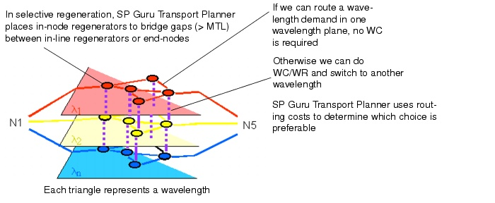

Transparent Networks > Algorithm Descriptions > Routing Algorithm
Routing Algorithm
SP Guru Transport Planner's transparent network routing algorithm has the following characteristics:
- An important factor in the algorithm is the ratio between the link cost versus the cost for wavelength regeneration or conversion (WR/WC). The routing algorithm considers this cost ratio when it chooses between additional transparent hops and an additional WR/WC. This ratio does not influence whether a signal must be regenerated to obey transparency limitations.
- Given the default cost settings, SP Guru Transport Planner prefers one additional WC/WR over one additional hop and one additional hop over two WC/WRs. The latter means that routing a connection over two hops without regeneration is preferable to routing over a shorter path with extra regeneration.
- For a transparent node with selective regeneration, you can specify the amount of regeneration capacity manually: right-click on a node in the OCH Node Browser and choose Set Regenerator Capacity. To remove the unused regenerator capacities in the selected node, choose Strip Regenerator Capacity from the right-click menu. For more information about this browser, see OCH Node Browser.
- By using the routing algorithm (see Route DCL/OCH Traffic Dialog Box), you can then evaluate the traffic that can be routed according to the amount of regenerator capacity in the nodes. Otherwise, you can let SP Guru Transport Planner determine the amount of regeneration capacity by using the dimensioning algorithm (see Dimension DCL/OCH Layer Dialog Box). In the latter case, the algorithm adds as much regeneration capacity to the nodes as needed to try to accommodate the specified traffic matrix in the network. You cannot specify the amount of regeneration capacity of fully transparent nodes (no regeneration capacity) and opaque nodes (full regeneration capacity).
Routing vs. WC/WR: Example
Figure 10-2 shows how cost parameters affect the choice between routing and WC/WR for a wavelength demand. The routing algorithm considers routing cost (per hop) and regeneration cost (per transition between wavelengths) to choose between routing and WC/WR. In some cases, a longer route might be preferred if no in-node regeneration is required.
Figure 10-2 Routing Cost vs. Regeneration Cost in the Transparent Algorithm

In Figure 10-2, each plane represents an available wavelength plane in the transparent network. The algorithm uses the cost parameters to determine the optimal route for a specific connection and whether WR/WC is required along the path. SP Guru Transport Planner does wavelength regeneration or conversion according to the characteristics of the optimal route:
- If the entire path is assigned to the same wavelength (no conversion is needed), the connection is routed in the same wavelength plane.
- If the path length exceeds the MTL, the algorithm does regeneration in an intermediate node of the path. Depending on the spare resources in the network, an implicit WC might be needed in the intermediate node. If implicit WC is needed, the path is switched from one wavelength plane to another in the intermediate node; if implicit WC is not needed, the path stays in the same wavelength plane.
- If no path can be found within the same wavelength (because resources have been used to accommodate other connections), the algorithm does explicit WC—that is, it switches to another wavelength in the intermediate node.
| Home © 1987-2007 OPNET Technologies, Inc. All Rights Reserved. This software may be covered by one or more U.S. Patents. See complete patent notice in the Legal Notices section. OPNET Support Center |